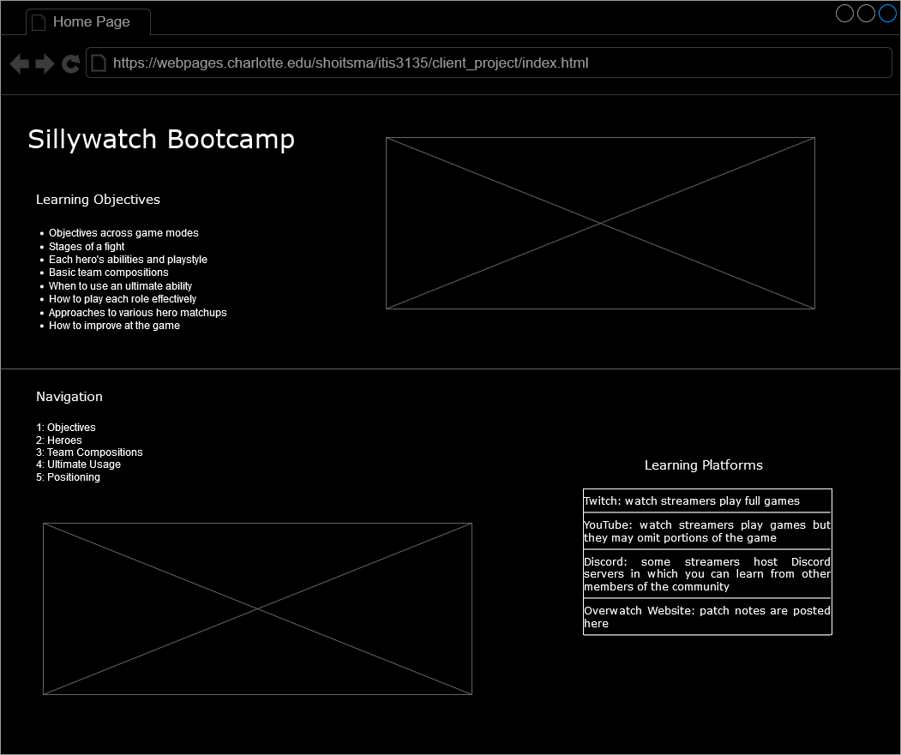

Project Overview
Sillywatch Bootcamp is an informational application targeted at new Overwatch players to help them learn the game. There will be pages dedicated to explaining hero abilities and playstyles, macro game concepts, and ultimate usage.
Client Information
Name: Jeremy Abel
Institution: UNC Charlotte
Email Address: [private]
Phone Number: [private]
Wireframe/Site Map
Page Design
Home Page: the first page anyone sees- gives an overview of the project as well as navigation to other pages. Targeted towards Overwatch players who want to improve. Shares the learning objectives of the course and other learning sources. Users will not be asked to enter data and no validation is needed. There will be hyperlinks to other pages. No special actions will happen.
Objectives: details the different game modes and approaches that must be taken to win the game on a macro scale. Targeted towards brand new Overwatch players. There will be sections about push, control point, and three control point maps and overarching goals associated with each as well as mode specific strategies. Users will not be asked to enter data and no validation is needed. There will be images for each mode.
Heroes: outlines the kits of all heroes and strategies specific to each. Targeted towards new Overwatch players and anyone who wants to try a hero unfamiliar to them. There will be a layout of images with hero portraits similar to the in-game hero layout. When each image is clicked, a pop-up appears with information regarding the hero. There will be a search bar that accepts input of a hero name. When the hero name is typed in, their pop-up appears.
Team Compositions: builds on the Heroes page and has Javascript functionality. Targeted towards Overwatch players who do not understand good team compositions or want to build on their current knowledge of it. A team of five heroes can be selected. Each hero is assigned a class of "poke", "brawl", and/or "dive". The amount of each in the selected composition will determine the overall team playstyle and note strengths as well as weak points. Users will select heroes to fill in five slots by clicking on their images or entering hero names into an input field and clicking a button to generate the composition analysis. This page may be less precise than other pages because there are a lot of nuances that may be missed due to the sheer number of team combinations that cannot all be accounted for in a reasonable time span.
Ultimate Usage: describes the concept of an "ultimate economy" and when or when not to use an ultimate ability. Targeted towards new Overwatch players and lower ranked players (who often misuse ultimates). There wil be an informational blurb as well as a hero gallery that displays information about each of their ultimates when clicked on. An input field to enter hero name to bring up their ultimate will be included.
Positioning: this is the most complicated topic to describe and will thus be simplified. Targeted towards new Overwatch players and lower ranked players. There will be text explaining the importance of high ground and cover with images to help illustrate the concept. The concept of space will be introduced and what it means to take it or give it up. The difference between tank, dps, and support positioning will be highlighted as well as concepts such as wide swinging, peeking, and overextending. There will be no data input or other interactive features save for hyperlinks to videos.